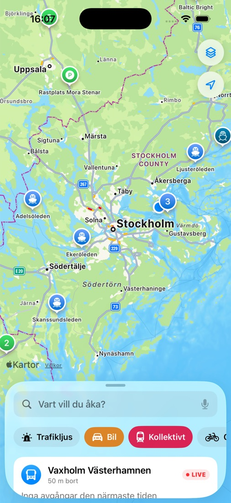

La Suède sur une seule carte, en temps réel.
360Maps est faite pour visiter la Suède. Trouvez les sites à ne pas manquer, prenez les bus, les trains et les bateaux, consultez la circulation, la météo et le stationnement, et suivez des indications vocales, en 28 langues sur iPhone.
Ce que vous voyez sur la carte
Activez ce dont vous avez besoin. Tout provient de données ouvertes d’autorités publiques et d’exploitants de transport, et se met à jour pendant que vous regardez.
-
Sites à voir
Plus de 340 lieux à ne pas manquer en Suède, avec une photo, les horaires d’ouverture, Look Around et un court texte dans votre langue. Les photos viennent de Wikimedia Commons et les textes de Wikipedia.
-
Lieux sélectionnés
Des lieux que nous choisissons pour les visiteurs, comme les bars à espresso italiens que recommandent les Italiens de Stockholm. Ils s’affichent toujours, quel que soit le niveau de zoom.
-
Restaurants, cafés et bars
Chacun dans sa couleur, avec les horaires d’ouverture, et une liste quand vous touchez un groupe. Environ 20 000 lieux dans toute la Suède.
-
Pharmacies et urgences
Pharmacies et services d’urgences hospitaliers dans toute la Suède, avec les horaires d’ouverture. En cas d’urgence, appelez le 112.
-
Lieux de baignade, nature et aurores boréales
Plages avec la température de l’eau du jour, parcs nationaux, réserves naturelles et patinoires, et les chances de voir des aurores boréales.
-
Bus, métro, trains et bateaux
Les véhicules se déplacent sur la carte avec leur numéro de ligne, dans 15 comtés. Le rouge correspond au bus, le bleu au métro, le violet au train et le turquoise au bateau.
-
Bouchons et temps de trajet
Temps de trajet mesurés sur les grands axes et les tunnels de Stockholm, chaque minute. Un bouchon s’affiche sous la forme +2 minutes par rapport à la normale.
-
État des routes
Neige, neige fondue et verglas sur les routes, sous forme de lignes, avec ce qui se trouve sur la chaussée et le moment du déneigement.
-
Radar de pluie
Précipitations actuelles d’après le radar météo du SMHI, toutes les cinq minutes. Le bleu indique une pluie faible, le jaune et le rouge une pluie forte.
-
Perturbations et travaux routiers
Accidents, fermetures et travaux de l’Administration suédoise des transports, avec le lieu et l’heure.
-
Caméras de circulation
Touchez une caméra pour voir la route. L’image se rafraîchit toute seule pendant que vous regardez.
-
Bacs et navires
Le prochain départ des bacs routiers de l’Administration suédoise des transports, et les navires en mer.
-
Stationnement à destination
Quand vous planifiez un trajet en voiture, voyez le stationnement près de votre destination, avec le nombre de places et le prix. Les places libres s’affichent là où la ville les partage.
-
Feux de circulation sur la route
L’emplacement du prochain feu quand vous conduisez. La couleur et le compte à rebours viendront quand les villes partageront leurs données de signalisation de manière ouverte.
-
Police, Krisinformation et SMHI
Incidents là où vous êtes, annonces publiques importantes et alertes météo.
À quoi ça ressemble
Images de l’app, prises avec des données réelles. Les captures d’écran montrent la version suédoise.





De A à B
- Voiture
- Transports en commun
- Vélo
- À pied
Choisissez comment vous voulez voyager. 360Maps compare les itinéraires avec la circulation du moment et montre ce qui se trouve sur votre route : bouchons, état des routes, travaux, bacs et feux de circulation. En transports en commun, vous obtenez les départs, les retards et les correspondances dans toute la Suède.
Lors d’un trajet en voiture, à vélo ou à pied, le prochain virage est annoncé à voix haute, même avec l’écran verrouillé. Si vous vous trompez de route, l’app trouve un nouvel itinéraire, et s’il est plus rapide d’au moins trois minutes, elle vous le signale. Près de votre destination, vous voyez où vous garer.
Une journée de sortie

Surprenez-moi
L’app planifie une journée à partir de l’endroit où vous êtes : sites et parcs, avec déjeuner et café dans des lieux ouverts. Choisissez la marche, le vélo ou les transports en commun, et mélangez jusqu’à ce que la journée vous convienne.
Les musées, palais et églises sont placés avant 17 h, car l’app ne connaît pas leurs horaires d’ouverture.
Vous devez prendre un bus ou un train ? Touchez le départ et choisissez Arriver à l’heure, et l’app vous dit quand partir.
Bon à savoir en Suède
Les numéros d’urgence à portée de doigt, le lever et le coucher du soleil du jour, les jours fériés suédois et ce qui ferme ces jours-là, payer et laisser un pourboire, Systembolaget, l’eau du robinet, les prises électriques et le droit d’accès à la nature. Avec un convertisseur en couronnes au taux de la Banque centrale européenne, et douze phrases suédoises lues à voix haute avec leur sens dans votre langue.
Le soir, l’application liste les musées et les sites près de vous qui sont encore ouverts, et, quand la pluie approche, des musées et des églises où aller à la place. Les lieux à entrée gratuite sont signalés.
Gratuit et 360Maps Plus
La carte avec toutes ses couches, la recherche, les transports en commun, le vélo, la marche, Surprenez-moi et la planification d’un itinéraire en voiture sont gratuits. Vos trois premiers trajets avec guidage en voiture sont aussi gratuits.
Avec 360Maps Plus, vous obtenez le guidage en voiture : virage par virage à voix haute, avertissements de bouchons, de verglas et de travaux, et un nouvel itinéraire quand la circulation change. Et ceci :

Ce que coûte le trajet, et un contrôle hivernal
Taxe de congestion et péages de ponts le long de votre itinéraire en voiture, calculés pour le moment où vous passez, et ce que cela coûte si vous partez plus tard.
Du 1er novembre au 30 avril : verglas et neige en chemin, la température à l’endroit où vous arriverez et les alertes du SMHI.

Règles de stationnement à Stockholm
Zoomez et les bords de chaussée se colorent : vert là où vous pouvez vous garer, orange là où la rue est nettoyée dans la journée, rouge là où le stationnement est interdit en ce moment et gris là où la place est réservée.
Selon la réglementation de la ville. Les panneaux dans la rue font foi.

Où se trouve la voiture
Enregistrez l’endroit où se trouve la voiture, et l’app montre ce qui s’applique exactement là : le prix actuel, le tarif complet et le moment du nettoyage de la rue.
Me le rappeler envoie une notification la veille au soir et une heure avant le début du nettoyage de la rue.
Plus existe pour une semaine (sans abonnement), au mois, à l’année ou en achat unique. L’App Store affiche le prix dans votre pays. Conditions d’utilisation.
Données ouvertes
Tout ce qui figure sur la carte provient de données ouvertes d’autorités et d’entreprises de transport suédoises.
Parmi les sources : Trafiklab et Samtrafiken, SL, l’Administration suédoise des transports, le SMHI, la police suédoise, Krisinformation.se, la Ville de Stockholm, Wikipedia et © OpenStreetMap contributors. Toutes les sources et licences sont indiquées dans l’app, sous Sources, licences et confidentialité.
Assistance
Vous avez trouvé un bug, il manque quelque chose sur la carte ou vous avez une question sur l’app ? Écrivez à raztechsupport@icloud.com et nous vous répondrons. Les réponses aux questions fréquentes se trouvent sur la page d’assistance.